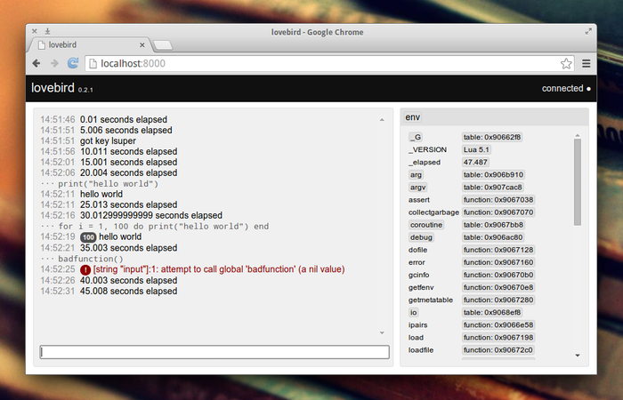

Lovebird
Lovebird is a browser-based debug console for LÖVE.

Check out the README for instructions on how to get it set up.
Once you have it running you can enter lua commands into the input box at the bottom, these will be run immediately. All print output will be printed to the output console.
At the right side of the page you can browse the globally accessible environment. This shows each variable name with its value next to it. If you click a variable's value its name will be inserted into the input box; this allows you to, for example, click a variable's value and type "= 10" to set that variable to 10.
Lovebird should work wherever LuaSocket is available -- this includes both LÖVE 0.8 and 0.9.
Links